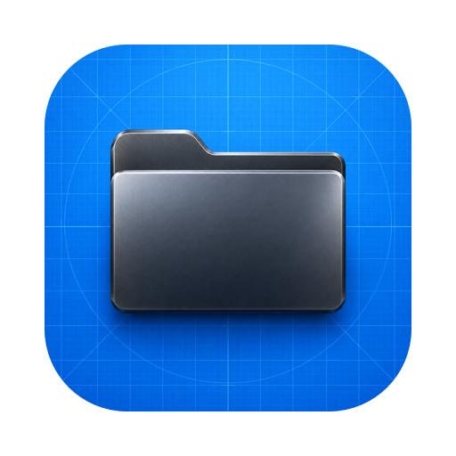
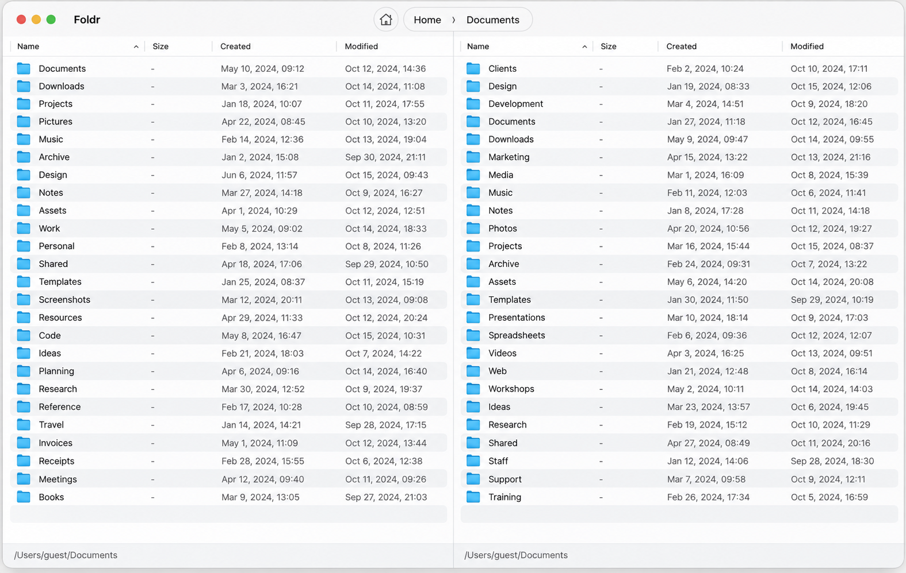

Two panes, one flow
Keep two folders side by side and drag files between them when you need to.

FoldrMeet Foldr, a two-pane file manager that makes space for a better way to work.

Foldr for macOS · Example files and folders
Browse, organize, and move between folders with a little more context and a lot less back and forth.
Keep two folders side by side and drag files between them when you need to.
Take a look at your files without leaving your workspace. The right pane can switch between files and preview.
Make everyday work feel more familiar with configurable settings and custom context menu commands.
Get the latest version of Foldr for macOS.